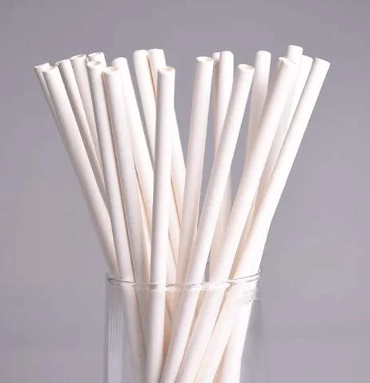

Canufinhos
Uma marca sustetável e de alta qualidade, que unifica e ajuda a natureza
Cuidar do planeta e dos animais é um dever e não um diferencial

Esses são canudos biodegradavéis feitos especialmentes para proteger o
meio ambiente e os animais, principalmente marinhos. São especiais para se
desfazerem depois de um certo tempo de uso, assim protegendo os animais de
sofrerem algum dano causado por eles.